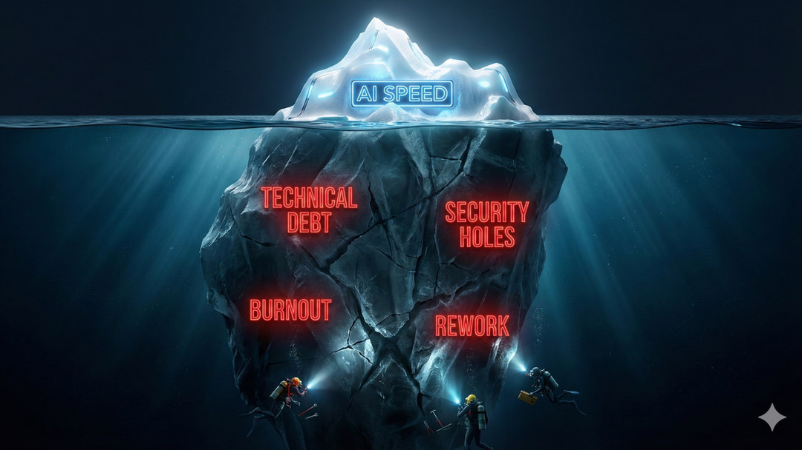
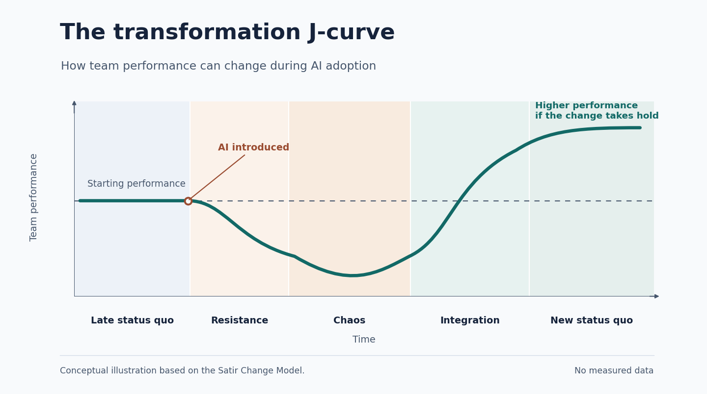

Original iceberg cover from the January 2026 LinkedIn edition.
Source and image details
Original LinkedIn cover. Used with the article author’s permission for this site edition.
The Efficiency Illusion
In late 2024 and throughout 2025, a dangerous narrative took hold in boardrooms across the tech industry. The logic seemed seductive in its simplicity: if AI tools like GitHub Copilot, Cursor, or Windsurf can help a developer write code 20% to 50% faster, then surely a company can reduce its engineering headcount by a similar margin while maintaining the same output.
This "spreadsheet logic" has led to a wave of premature optimizations where leadership teams view AI licenses as a direct substitute for human talent. The expectation is straightforward: buy the tools, cut the bottom 5-20% of the workforce, and watch margins improve.
However, this approach fundamentally misunderstands the nature of software engineering. It confuses typing speed with problem-solving.
The reality is that AI has made the easiest part of software development—generating syntax—virtually free. But it has not solved the hard parts: understanding complex system architecture, managing dependencies, and ensuring business logic aligns with user needs. By equipping teams with powerful AI generators and simultaneously reducing headcount, companies are not increasing efficiency; they are simply increasing the velocity at which they produce technical debt.
We are witnessing a shift from "writer's block" to "writer's flood". Developers are generating vast amounts of code that looks plausible on the surface but often lacks depth or context. "Lines of Code" (LOC) has always been a vanity metric, but in the age of AI, it has become a liability. The industry is seeing a spike in "code churn"—code that is written, pushed, and then almost immediately deleted or rewritten because it didn't actually solve the problem.
Instead of a leaner, faster organization, the "efficiency illusion" creates a bloated codebase managed by fewer people who are increasingly overwhelmed by the sheer volume of generated text they must maintain.
Key Reference & Data Point:
The Rise of Code Churn: A comprehensive study by GitClear, analyzing over 211 million lines of code, found a disturbing trend coinciding with the widespread adoption of AI assistants (2025).
The Finding: "Code Churn" (the percentage of code that is updated or deleted less than two weeks after being authored) is on the rise.
The Implication: This suggests that while AI helps developers type faster, it often leads to "copy-paste" behavior and lower-quality code that requires immediate rework. We are moving faster, but often in the wrong direction.
The Theory of Change: Why Transformation Costs More (Initially)
If previous chapter addressed the technical misconception of AI adoption, this chapter addresses the managerial one. The belief that AI implementation is a cost-saving exercise from Day One ignores decades of research into how organizations actually change.
Implementing AI-native workflows is not merely a software update; it is a fundamental restructuring of how value is created. According to classic Change Management theory, specifically the Satir Change Model, any introduction of a foreign element (in this case, AI) into a stable system precipitates a period of chaos. Before a team reaches a "New Status Quo" of higher performance, they must inevitably pass through a valley of resistance and reduced productivity.
This phenomenon is known as the "J-Curve" of transformation. When leadership cuts headcount at the beginning of this curve, they are effectively sabotaging the transformation before it begins. They are removing resources exactly when the organization is under the highest stress.


The conceptual J-curve shows a transitional dip and a possible higher steady state as the team integrates new practices.
Source and image details
Original diagram for this site edition, based on the Satir Change Model as described by Steven M. Smith. CC BY 4.0.
To succeed, companies must operate as what Harvard Business Review calls an "Ambidextrous Organization". This requires executing two contradictory modes of operation simultaneously:
Exploit (Run the Business): Maintaining legacy systems, fixing current bugs, and generating revenue using established, manual-heavy processes. This requires the existing workforce to keep the lights on.
Explore (Change the Business): Experimenting with AI agents, building new evaluation pipelines, and retraining staff on prompt engineering and architectural review. This requires additional time and mental energy.
The fatal error of 2024-2025 is the assumption that you can siphon resources from Group 1 to fund Group 2. In reality, the "Exploit" engine cannot stop running while the "Explore" engine is being built.
For a period of 6 to 18 months, an organization must bear the cost of parallel structures. You need your senior engineers to maintain the old standard of quality while simultaneously learning to govern the new AI-driven chaos. This is a period of investment, requiring more budget and more headcount (or at least stable headcount with higher training costs), not less.
Cutting costs during this phase is akin to selling your car’s engine to buy fuel—you might have the energy source, but you no longer have the mechanism to move forward.
Key Reference & Concept:
The Ambidextrous Organization: Research by Charles A. O'Reilly III and Michael L. Tushman highlights that successful companies separate their new, exploratory units from their traditional exploitative ones, acknowledging that they require different structures, cultures, and metrics.
The Insight: Attempting to merge these functions under a shrinking budget leads to the failure of both. The "old" business suffers from neglect, and the "new" business is strangled by a lack of resources.
The Lesson: Transformation is an addition to the workload, not a subtraction.
Source: Harvard Business Review: The Ambidextrous Organization Concept: The Satir Change Model (The J-Curve)
The Hidden Cost of Parallel Operations
If the "J-Curve" describes the timeline of transformation, the "Hidden Cost of Parallel Operations" describes the bill that comes due during that timeline.
Many organizations calculate the ROI of AI adoption by simply comparing the cost of a Copilot license ($19-$39/month) against the hourly rate of a developer. This calculation is dangerously incomplete. It ignores the operational reality of the transition phase described in previous chapter.
During the transition to an AI-native workflow, companies face a "Double Overhead". They are not swapping one cost for another; they are temporarily stacking them.
The Legacy Cost: You must continue paying for the maintenance of existing systems, which requires deep institutional knowledge and traditional engineering skills.
The Transformation Cost: Simultaneously, you are paying for the "New Way"—not just software licenses, but the infrastructure for RAG (Retrieval-Augmented Generation), vector databases, and, most importantly, the "Training Tax".
The "Training Tax" is the time and money required to upskill your workforce. Effective use of AI requires a shift from "writing syntax" to "prompt engineering," "context curation," and "output verification". These are not innate skills; they must be taught.
Furthermore, the cost-cutting mindset often leads to the dismissal of mid-level engineers to "flatten" the organization. This triggers a "Brain Drain" of domain knowledge. AI models are excellent at general reasoning but have zero knowledge of your company's specific business logic or legacy quirks unless provided with context. When you fire the people who hold that context in their heads, you lobotomize your organization. You are left with a powerful AI engine but no one who knows how to steer it through your specific business terrain.
Trying to "save" money during this phase by cutting staff is a false economy. It is like firing the navigation crew on a ship because you bought a new GPS system—before anyone has learned how to program the destination.
Key Reference & Insight:
Why Digital Transformations Fail: Research by McKinsey Digital consistently shows that the primary reason for transformation failure is under-resourcing the "change engine".
The Insight: transformations require a reallocation of resources towards capability building (training and upskilling), not just technology acquisition. Companies that focus solely on tech adoption without investing in the human element (the "Training Tax") are 2.5x more likely to fail.
The Lesson: You cannot buy efficiency; you have to build it. And building costs money before it saves money.
Source: McKinsey: Unlocking success in digital transformations
The Cognitive Load Paradox: Why Seniors Are Burning Out
While executives look at spreadsheets, engineering teams are grappling with a fundamental shift in their daily reality. The introduction of AI coding assistants has created a dangerous asymmetry in the software development lifecycle: writing code has become instant, but reading code remains at human speed.
This asymmetry hits Senior Engineers the hardest.
In a traditional workflow, a Senior Engineer spends a portion of their time coding and a portion reviewing the work of Junior and Mid-level developers. The volume of code produced was limited by the typing speed and thinking speed of the juniors.
With AI, that limiter has been removed. Junior developers, empowered by tools like Copilot, can now generate vast amounts of code in minutes. They open Pull Requests (PRs) that are larger, more complex, and more frequent than ever before.
The Senior Engineer, who acts as the gatekeeper of quality, is suddenly facing a firehose of code. This leads to "Reviewer Fatigue".
The problem is exacerbated by the nature of AI-generated code. It is often "plausible but wrong"—it looks syntactically perfect and follows the style guide, but may contain subtle logical hallucinations or inefficient patterns that are difficult to spot.
The Old Way: A senior reviews code where the logic is usually sound, but the syntax might be messy.
The AI Way: A senior reviews code where the syntax is perfect, but the logic might be fundamentally broken in a way that requires deep mental simulation to catch.
This drastically increases Cognitive Load. Instead of focusing on high-level system architecture or solving critical business problems, the most expensive and experienced engineers are turned into "AI Janitors," spending their days debugging code they didn't write and which the author often doesn't fully understand.
The result is a paradox: individual productivity (lines of code generated) skyrockets, but team velocity (features shipped to production) stalls because the review process becomes a massive bottleneck.
Key Reference & Insight:
The Impact of Cognitive Load on Developer Experience (DevEx):Microsoft Research and GitHub have extensively studied what actually drives developer productivity. They found that "Flow State" is critical, and high cognitive load is the primary enemy of flow.
The Insight: When developers are forced to spend excessive mental energy verifying untrusted code, their ability to solve complex problems degrades. High cognitive load correlates strongly with burnout and lower overall system quality.
The Lesson: AI tools reduce the cognitive load of writing, but they transfer that load (with interest) to the reviewing phase.
Source: Microsoft Research: DevEx: What Actually Drives Productivity
The Quality vs. Quantity Trap
The direct consequence of the "Efficiency Illusion" (Chapter 1) and "Reviewer Fatigue" (Chapter 4) is a subtle but pervasive degradation of software quality. By prioritizing the speed of output, organizations are inadvertently incentivizing the creation of technical debt at an industrial scale.
This phenomenon creates what can be called the "Illusion of Competence".
In the past, a junior developer who didn't understand a problem would simply get stuck. They would have to ask for help or read documentation. This was a natural throttle on the codebase. Today, that same developer can ask an AI to "write a function that does X," and the AI will provide a syntactically perfect solution in seconds.
The code compiles. It runs. It might even pass the basic unit tests. But does it handle edge cases? Is it secure? Does it scale?
Because the junior developer didn't write the logic, they often lack the depth of understanding required to answer these questions. They are not "coding"; they are "accepting suggestions". As a result, we are seeing a rise in "Happy Path" programming—code that works perfectly under ideal conditions but fails catastrophically when faced with unexpected user behavior or malformed data.
Furthermore, the cost of fixing these errors follows the classic software engineering curve: a bug caught during the design phase costs $1 to fix; a bug caught in production costs $100. AI accelerates the "push to production" cycle, meaning bugs are being shipped faster than ever before.
Security is the most critical casualty. AI models are trained on public code repositories, which contain millions of examples of insecure coding patterns. Without rigorous oversight, AI assistants will happily suggest SQL injection vulnerabilities, hardcoded credentials, or outdated encryption methods.
Key Reference & Insight:
Do Users Write More Insecure Code with AI Assistants? A study by researchers at Stanford University investigated the impact of AI coding assistants on security.
The Finding: Participants who had access to AI assistants wrote significantly lesssecure code than those who didn't.
The Twist: Crucially, those same participants were more likely to believe their code was secure. The AI gave them false confidence.
The Lesson: AI lowers the barrier to entry for writing code, but it raises the barrier to entry for writing safe code.
Source: Stanford: Do Users Write More Insecure Code with AI Assistants?
The Real Future: Two Horizons of Value and Software 2.0
The pessimism of the previous chapters leads to a necessary question: If AI doesn't save money on headcount immediately and introduces risks to quality when mismanaged, why use it at all?
The answer lies in a fundamental reframing. When organizations stop treating AI as a cost-cutting tool and start investing in the transformation of engineering culture, they unlock two distinct horizons of value that were previously inaccessible.
Horizon 1: High-Velocity Delivery (Perfecting Software 1.0)
Before we reach the sci-fi future, proper AI adoption revolutionizes the current work. This is the first effect of proper investment: truly faster and higher-quality delivery.
When teams are trained not just to "generate code," but to use AI for architectural review, automated testing generation, and legacy refactoring, the metrics change. We don't just get faster typing; we get faster cycle times and higher reliability. In this mode, AI acts as a force multiplier for best practices. It allows a team to maintain strict TDD (Test Driven Development) without the tedium, or to document complex systems instantly.
Horizon 2: The Leap to Software 2.0 (Agentic Workflows/Behavioral Software)
Mastering Horizon 1 is the prerequisite for Horizon 2: building things that never existed before. We are witnessing a platform shift from "Copilots" (assistants) to "Agents" (actors).
Software 1.0 (The Current Paradigm): Explicit logic written by humans. You use a travel app to manually search, filter, and book.
Software 2.0 (The Agentic Future): Goal-driven systems. You tell the app "Plan a weekend in Paris," and the agent negotiates with APIs, books flights, and schedules rides autonomously.
This represents the creation of "Behavioral Applications". These are not just static interfaces; they are intelligent systems capable of reasoning, planning, and error correction.
Author’s note, November 2026. “Behavioral Applications” was the term I used in this edition. I now use Thinking Systems for systems that rely partly on model judgment for at least one consequential runtime responsibility. The same test applies to fixed workflows and autonomous agents.
The Cultural Bridge: Why Investment is Non-Negotiable
Crucially, neither Horizon 1 nor Horizon 2 can be achieved by simply buying licenses and firing staff. Both require a radical change in engineering culture.
Building probabilistic, agentic systems moves the center of gravity from "syntax generation" to "System Orchestration" and "Evaluation". To succeed, you don't need fewer developers; you need transformed developers. You need engineers who understand how to build "guardrails" around AI models and how to debug logic that wasn't written, but emerged.
This cultural shift requires additional investment, not cuts. It demands budget for training, experimentation time, and the creation of new "AI Ops" roles. To govern this transition from deterministic code to probabilistic systems, we need more than just tools—we need a new operational standard, what I call Uncertainty Architecture.
Companies that invest in this transformation today will dominate the market with superior products tomorrow. Those that cut costs will be left with broken codebases and no one capable of fixing them.
Key Reference & Vision:
AI Agents and the Future of Software:Leading venture capital firms and tech visionaries, including Sequoia Capital and Bill Gates, have identified "Agents" as the next major platform shift. However, they emphasize that this is a shift in capability, not just efficiency.
The Vision: "Agents are not just going to change how everyone interacts with computers. They’re going to upend the software industry".
The Reality Check: Realizing this vision requires a shift from "software as a tool" to "software as a service" (performing tasks). This necessitates a new breed of engineering teams capable of managing non-deterministic outcomes—a skill set that must be cultivated through investment.
Source: Sequoia Capital: AI Agents | Bill Gates: AI is about to completely change how you use computers
Conclusion: Invest to Evolve, Don't Cut to Survive
The narrative that AI will allow companies to immediately slash engineering budgets by 20-30% is not just optimistic; it is structurally dangerous. As we have explored, this "Cost-Cutting Fallacy" ignores the realities of the J-Curve of transformation, the hidden costs of parallel operations, and the crushing cognitive load placed on senior staff.
The companies that treat AI solely as a mechanism for headcount reduction are destined to fail. They will likely experience a short-term boost in margins, followed by a long-term collapse. They will fail to master Horizon 1 (drowning in low-quality, AI-generated technical debt) and they will lack the talent to reach Horizon 2 (unable to build the complex, agentic systems of the future).
However, the future is bright for organizations that view AI correctly: not as a cost-saver, but as a capability multiplier.
For leaders navigating 2026, the playbook is clear:
Fund the J-Curve: Accept that productivity will dip before it soars. Budget for the "Transformation Tax" and resist the urge to cut resources during the transition.
Measure Value, Not Volume: Stop tracking "lines of code" or "commit frequency". Start measuring "cycle time," "system reliability," and "customer problems solved".
Upskill to Bridge the Gap: Your domain experts are more valuable than ever. The AI can write the syntax, but only your people understand the business logic. Invest in training them to master Horizon 1 tools so they are ready to build Horizon 2 agents.
Build for Software 2.0: Shift your focus from "how do we build this app cheaper?" to "what kind of intelligent, agentic applications can we build now that were impossible before?"
AI is not a way to do the same work with fewer people. It is a way for your existing team to do things that were previously impossible. The winners of the next decade will be the ones who invest to evolve, rather than cut to survive.
Final Takeaway:
"You can't shrink your way to greatness. AI offers a path to exponential value creation, but the toll for that path is paid in investment, patience, and human capital."
Related reading: The SDLC Is Out of Balance: Beyond the AI Code Review Bottleneck examines how faster generation can move constraints and costs across review, integration, learning and ownership. It separates coding activity from useful delivery and suggests bounded ways to test a different operating model.
Vitalii Oborskyi is an enterprise delivery leader and independent research author. His work focuses on AI-assisted software delivery and the governance of systems that depend on model judgment. He is the author of Uncertainty Architecture and The Subprime Code Crisis.